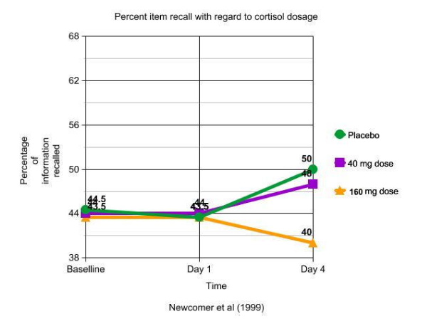

Newcomer et al. (1999) investigated whether high levels of cortisol, a stress hormone, interfere with verbal declarative memory. The study involved employees and students from Washington University Medical Center, screened for factors like pregnancy, mental illness, or corticosteroid treatments. Participants were matched by age and gender and assigned to one of three groups: a high cortisol group (160 mg/day, simulating major stress), a low cortisol group (40 mg/day, simulating minor stress), or a placebo group.
Participants listened to and recalled prose paragraphs of equal difficulty, tested at baseline, on days 1 and 4, and six days later. Results showed that high cortisol levels impaired memory performance, but this effect was reversible after treatment ended. The low-dose and placebo groups showed no significant difference, and their performance improved over time due to practice effects.
The study demonstrated a clear cause-and-effect relationship between cortisol levels and memory. Baseline testing controlled for individual differences, and counterbalancing controlled for text difficulty. However, the multi-day design allowed for extraneous variables like external stressors, and the prose memory task limited real-world generalizability.
Although ingesting cortisol temporarily impaired memory, informed consent was obtained, and the effects were not permanent. This study highlights the impact of cortisol on memory and its relevance to biological and health-related research.
